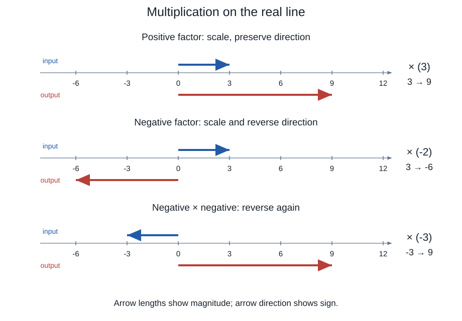
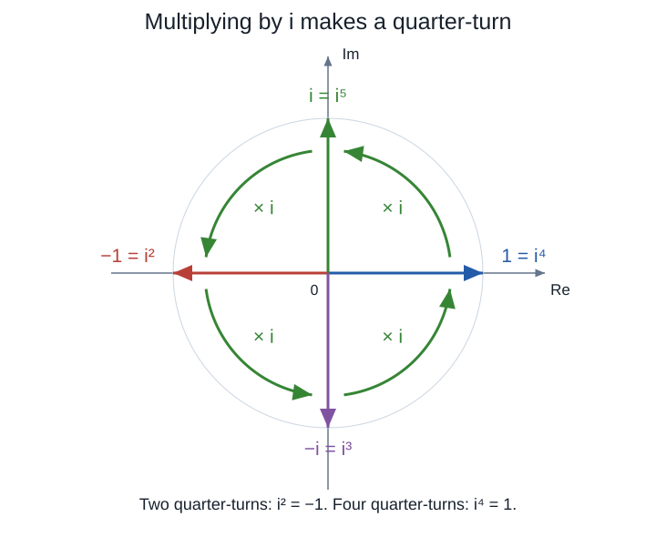
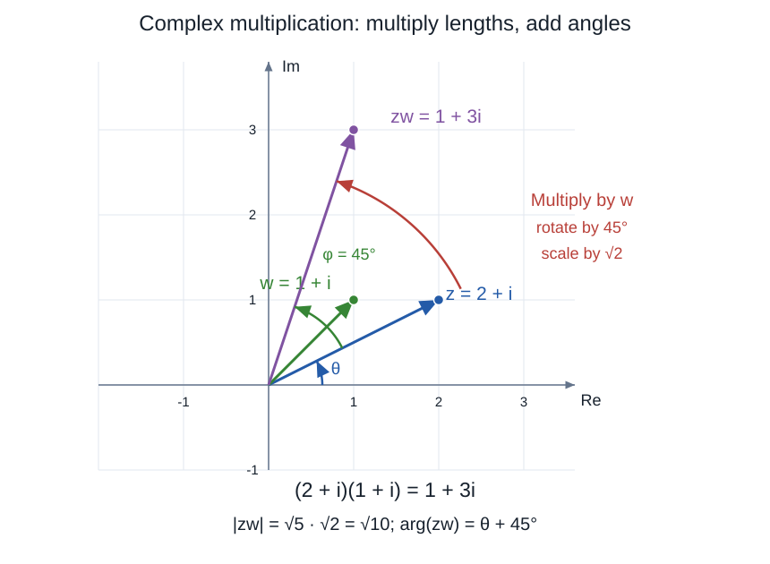
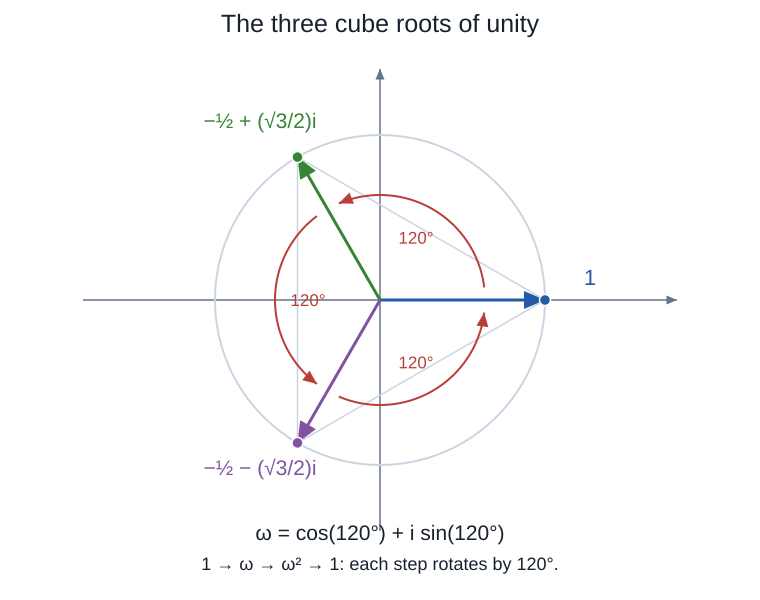
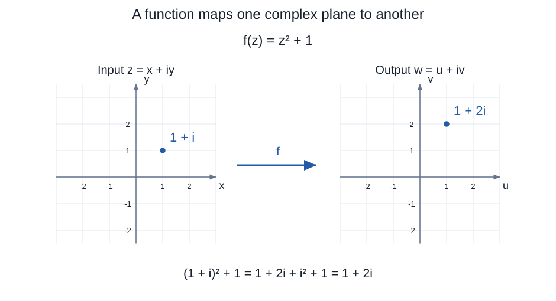
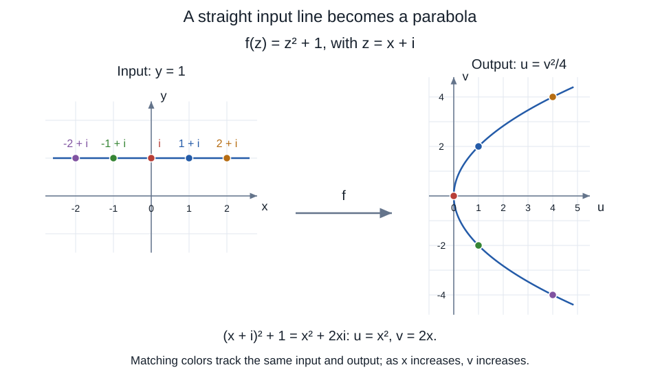

Complex and imaginary numbers are genuine mathematical objects, but they are not all real numbers in the technical sense. The title plays on those two meanings of “real.” In this passus, we build their arithmetic, interpret multiplication geometrically, and derive Euler’s formula \[ e^{i\theta}=\cos\theta+i\sin\theta. \] The formula will connect powers, roots, and rotations. We then use that connection to understand how a complex function transforms a plane.
We assume familiarity with factorials and power series. We will recall the particular expansions needed for the derivation without introducing series terminology.
1. An impossible division of a segment
Let \(AB=a>0\). Can we choose a point \(K\) between \(A\) and \(B\) so that \[ AK\cdot KB=\frac{a^2}{2}? \] If \(AK=x\), then \(KB=a-x\), with \(0<x<a\). The equation becomes \[ x(a-x)=\frac{a^2}{2}, \qquad x^2-ax+\frac{a^2}{2}=0. \] Completing the square gives \[ \left(x-\frac a2\right)^2=-\frac{a^2}{4}. \] No real number has a negative square, so no such point exists.
We can see the obstruction before solving the equation: \[ x(a-x)=\frac{a^2}{4}-\left(x-\frac a2\right)^2 \leq\frac{a^2}{4}. \] The largest product occurs at the midpoint, where both lengths are \(a/2\). The requested product \(a^2/2\) is twice that maximum.
Example. For a segment of length 10, the largest product is \(5\cdot5=25\), whereas the problem asks for 50. Moving the point elsewhere on the real line does not help: outside the segment, \(x(a-x)<0\).
If we allow a number \(i\) satisfying \(i^2=-1\), the equation has the two solutions \[ x=\frac a2\pm\frac a2i. \] These solve the algebraic equation. They do not produce a point between the endpoints of the original segment. Extending the number system changes the domain in which we are solving the problem.
Historical note. Paul Nahin discusses this problem in An Imaginary Tale, chapter 3, box 3.1, attributing it to Carnot’s Géométrie de position (1803). His account distinguishes Carnot’s interpretation of impossibility from Buée’s proposal to interpret the imaginary component as a displacement off the line. Nahin explicitly relies on Alexander Macfarlane’s later account rather than direct inspection of Carnot’s book. We will develop the plane interpretation mathematically below rather than treat it as Carnot’s conclusion.
Pause and explain. What does “no solution” mean here? Which statement changes when we allow complex numbers, and which geometric statement remains true?
2. What is a complex number?
A complex number has the form \[ z=a+bi,\qquad a,b\in\mathbb R,\qquad i^2=-1. \] The set of complex numbers is denoted by \(\mathbb C\).
- The real part is \(\operatorname{Re}(z)=a\).
- The imaginary part is \(\operatorname{Im}(z)=b\). It is the real coefficient \(b\), not the term \(bi\).
- A number is real when \(b=0\). Thus the real numbers are contained in the complex numbers.
- A nonzero number of the form \(bi\) is purely imaginary.
- Two complex numbers are equal exactly when both corresponding parts are equal: \[ a+bi=c+di\quad\Longleftrightarrow\quad a=c\text{ and }b=d. \]
For example, \(3-2i\) has real part 3 and imaginary part \(-2\); \(7=7+0i\) is both real and complex; \(-4i=0-4i\) is purely imaginary.
Why the definition is consistent with arithmetic
We can construct complex numbers as ordered pairs of real numbers. Define \[ (a,b)+(c,d)=(a+c,b+d) \] and \[ (a,b)(c,d)=(ac-bd,ad+bc). \] Identify the real number \(a\) with \((a,0)\), and set \(i=(0,1)\). Then \[ (0,1)(0,1)=(-1,0), \] so \(i^2=-1\). Also \((a,b)=(a,0)+b(0,1)=a+bi\).
This gives a concrete interpretation of the new arithmetic. We are not claiming that a real number has a negative square: we have constructed a larger number system.
The historical word “imaginary” does not mean fictitious. The word “lateral,” meaning sideways, suggests the plane picture we will use, but neither word replaces a mathematical definition.
3. The complex plane and basic operations
Represent \(z=a+bi\) by the point \((a,b)\). The horizontal coordinate axis is the real axis and the vertical coordinate axis is the imaginary axis. We can also represent \(z\) by the directed arrow from the origin to that point.
Addition and subtraction
Add or subtract corresponding coordinates: \[ (a+bi)+(c+di)=(a+c)+(b+d)i. \] For example, \[ (2+3i)+(-1+2i)=1+5i, \] \[ (2+3i)-(-1+2i)=3+i. \] Geometrically, addition follows the parallelogram rule, or the head-to-tail rule for arrows.
Multiplication
Distribute and use \(i^2=-1\): \[ \begin{aligned} (a+bi)(c+di) &=ac+adi+bci+bdi^2\\ &=(ac-bd)+(ad+bc)i. \end{aligned} \] For example, \[ (2+i)(3-2i)=6-4i+3i-2i^2=8-i. \]
Modulus and distance
The modulus of \(z=a+bi\) is its distance from the origin: \[ |z|=\sqrt{a^2+b^2}. \] Thus \(|3+4i|=5\), \(|-2i|=2\), and \(|0|=0\). The modulus is always a nonnegative real number.
The distance between two complex numbers \(z\) and \(w\) is \(|z-w|\). For example, the distance between \(2+3i\) and \(-1+2i\) is \[ |(2+3i)-(-1+2i)|=|3+i|=\sqrt{10}. \]
Conjugation and division
The complex conjugate of \(z=a+bi\) is \[ \overline z=a-bi. \] It reflects the point across the real axis. Multiplying conjugates gives \[ z\overline z=(a+bi)(a-bi)=a^2+b^2=|z|^2. \] For \(z\ne0\), this supplies a reciprocal: \[ \frac1z=\frac{\overline z}{|z|^2}. \] To divide by a nonzero complex number, multiply numerator and denominator by its conjugate. For instance, \[ \begin{aligned} \frac{3+2i}{1-i} &=\frac{(3+2i)(1+i)}{(1-i)(1+i)}\\ &=\frac{1+5i}{2} =\frac12+\frac52i. \end{aligned} \] Check by multiplying this answer by \(1-i\).
Practice. Find the real part, imaginary part, conjugate, and modulus of \(-3+4i\). Then calculate \((1+i)^2\) and \(1/(1+i)\).
4. Multiplication as a geometric transformation
Multiplication by a positive real number \(r\) stretches every arrow by the factor \(r\), or contracts it when \(0<r<1\). Multiplication by \(-1\) reverses every arrow: a half-turn about the origin. Multiplication by zero sends every point to the origin, so it is a separate case.

Figure 1. Input arrows are blue and output arrows are red. A negative factor reverses direction as well as scaling the magnitude.
What does multiplication by \(i\) do to an arbitrary point? \[ i(a+bi)=ai+bi^2=-b+ai. \] In coordinates this is \[ (a,b)\longmapsto(-b,a), \] which is a counterclockwise quarter-turn about the origin. This proves the rotation interpretation for every point, not just for 1.
Example. Starting with \(z=2+i\), repeated multiplication by \(i\) gives \[ 2+i\longmapsto-1+2i\longmapsto-2-i \longmapsto1-2i\longmapsto2+i. \] All four points have modulus \(\sqrt5\). The direction changes while the distance from the origin stays fixed.
In particular, \[ 1\xrightarrow{\times i}i\xrightarrow{\times i}-1 \xrightarrow{\times i}-i\xrightarrow{\times i}1. \]

Figure 2. Each curved arrow represents multiplication by i. Two steps give a half-turn; four return to the starting point.
Thus \[ i^0=1,\quad i^1=i,\quad i^2=-1,\quad i^3=-i,\quad i^4=1. \] For an integer exponent \(n\), write \(n=4q+r\), where \(0\leq r<4\). Then \(i^n=i^r\). For example, \[ i^{2026}=i^2=-1,\qquad i^{-1}=-i. \] Multiplication by \(-i\) is a clockwise quarter-turn. Multiplication by \(2i\) combines a counterclockwise quarter-turn with a doubling of distances from the origin.
5. Arguments, radians, and polar form
For a nonzero complex number, an argument is an angle measured from the positive real axis to its arrow, with counterclockwise angles taken as positive. The argument is not unique: adding a whole turn gives the same direction.
We use radians. An angle in radians is the signed arc length it cuts off on the unit circle. One full turn is \(2\pi\), so \[ 180^\circ=\pi,\qquad90^\circ=\frac\pi2, \qquad60^\circ=\frac\pi3. \] The sine and cosine power series used later require angles in radians.
If \(r=|z|>0\) and \(\theta\) is an argument of \(z=a+bi\), then \[ a=r\cos\theta,\qquad b=r\sin\theta. \] Therefore the polar form is \[ z=r(\cos\theta+i\sin\theta). \] All its arguments are \(\theta+2\pi k\), with \(k\in\mathbb Z\). When we need one chosen angle, we will use the principal argument \(\operatorname{Arg}(z)\in(-\pi,\pi]\). Other conventions exist. Zero has no defined argument because its arrow has no direction.
Example 1. For \(1+i\), the modulus is \(\sqrt2\) and an argument is \(\pi/4\): \[ 1+i=\sqrt2\left(\cos\frac\pi4+i\sin\frac\pi4\right). \]
Example 2. For \(-1+\sqrt3i\), the modulus is 2 and the point lies in the second quadrant: \[ -1+\sqrt3i=2\left(\cos\frac{2\pi}3+i\sin\frac{2\pi}3\right). \] Using only \(\arctan(b/a)\) can select the wrong quadrant. Always check the signs of both coordinates. When \(a=0\), the ratio is not even defined.
Why multiplication adds angles
Let \[ z=r(\cos\theta+i\sin\theta),\qquad w=s(\cos\phi+i\sin\phi). \] Distributing gives \[ zw=rs\left[(\cos\theta\cos\phi-\sin\theta\sin\phi) +i(\sin\theta\cos\phi+\cos\theta\sin\phi)\right]. \] By the trigonometric addition identities, \[ \boxed{zw=rs\bigl(\cos(\theta+\phi)+i\sin(\theta+\phi)\bigr).} \] Thus \(|zw|=|z||w|\), and an argument of the product is the sum of arguments of the factors, understood modulo \(2\pi\).
There are two related statements to keep distinct:
- To find the product, multiply the two moduli and add the two angles.
- As a map of the plane, multiplication by a fixed \(w\ne0\) scales every input by \(|w|\) and rotates it by an argument of \(w\).
Example. Multiplication by \(1+i\) scales by \(\sqrt2\) and rotates by \(\pi/4\). In particular, \[ (1+i)^2=2i, \] whose modulus is 2 and whose argument is \(\pi/2\).
A product with both rotation and scaling
Take \(z=2+i\) and \(w=1+i\). Algebra gives \[ zw=(2+i)(1+i)=2+2i+i+i^2=1+3i. \] Here \(|z|=\sqrt5\), \(|w|=\sqrt2\), and \(|zw|=\sqrt{10}\). Since an argument of \(w\) is \(\pi/4\), multiplication by \(w\) rotates the arrow for \(z\) counterclockwise by 45° and increases its length by a factor of \(\sqrt2\). The output angle is about 71.565°, the sum of about 26.565° and 45°.

Multiplication combines two operations. The blue input vector is rotated through the green angle and scaled by the modulus of w to produce the purple vector. The curved red arrow indicates the rotation angle; the increased vector length shows the scaling.
6. Euler’s formula, step by step
We already know how angles behave under multiplication. Euler’s formula explains why exponential notation fits that geometry: \[ \boxed{e^{i\theta}=\cos\theta+i\sin\theta\qquad(\theta\in\mathbb R).} \] Here is a derivation from the familiar power series. It assumes the standard sine and cosine expansions; it does not assume Euler’s formula.
Step 1. Extend the exponential to complex inputs
Define the complex exponential by the same power series as the real exponential: \[ e^z=\sum_{n=0}^{\infty}\frac{z^n}{n!} =1+z+\frac{z^2}{2!}+\frac{z^3}{3!}+\cdots. \] This series converges absolutely for every complex \(z\). In particular, its term magnitudes sum to the convergent real series \(\sum |z|^n/n!\). Consequently we may separate the even- and odd-indexed terms in the calculation below.
Step 2. Substitute the imaginary input
For a real angle \(\theta\), \[ e^{i\theta}=1+i\theta+\frac{i^2\theta^2}{2!} +\frac{i^3\theta^3}{3!}+\frac{i^4\theta^4}{4!} +\frac{i^5\theta^5}{5!}+\frac{i^6\theta^6}{6!}+\cdots. \] Use the four-step cycle of powers of \(i\): \[ e^{i\theta}=1+i\theta-\frac{\theta^2}{2!} -i\frac{\theta^3}{3!}+\frac{\theta^4}{4!} +i\frac{\theta^5}{5!}-\frac{\theta^6}{6!}+\cdots. \] Notice that even powers contribute real terms and odd powers contribute purely imaginary terms.
Step 3. Collect the two parts
Grouping those terms gives \[ \begin{aligned} e^{i\theta} &=\left(1-\frac{\theta^2}{2!}+\frac{\theta^4}{4!} -\frac{\theta^6}{6!}+\cdots\right)\\ &\quad+i\left(\theta-\frac{\theta^3}{3!} +\frac{\theta^5}{5!}-\frac{\theta^7}{7!}+\cdots\right). \end{aligned} \] The signs can also be checked directly: \[ i^{2k}=(i^2)^k=(-1)^k,\qquad i^{2k+1}=i(-1)^k. \] Thus the same calculation in summation notation is \[ e^{i\theta} =\sum_{k=0}^{\infty}\frac{(-1)^k\theta^{2k}}{(2k)!} +i\sum_{k=0}^{\infty}\frac{(-1)^k\theta^{2k+1}}{(2k+1)!}. \]
Step 4. Recognize the trigonometric series
Recall \[ \cos\theta=1-\frac{\theta^2}{2!}+\frac{\theta^4}{4!}-\cdots, \] \[ \sin\theta=\theta-\frac{\theta^3}{3!}+\frac{\theta^5}{5!}-\cdots. \] Substituting these identities proves \[ e^{i\theta}=\cos\theta+i\sin\theta. \] This is an exact identity for every real \(\theta\), not a small-angle approximation.
Step 5. Interpret the result
Because \(\cos^2\theta+\sin^2\theta=1\), \[ |e^{i\theta}|=1. \] Its argument is \(\theta\) modulo \(2\pi\). As \(\theta\) increases, the point moves counterclockwise around the unit circle, the circle \(|z|=1\) centered at the origin.
Some useful values are
| Angle in radians | Complex exponential | Point (real, imaginary) |
|---|---|---|
| 0 | e⁰ = 1 | (1, 0) |
| π/2 | eiπ/2 = i | (0, 1) |
| π | eiπ = −1 | (−1, 0) |
| 3π/2 | e3πi/2 = −i | (0, −1) |
| 2π | e2πi = 1 | (1, 0) |
The value at \(\theta=\pi\) gives Euler’s identity: \[ e^{i\pi}+1=0. \] It also follows that \[ e^{i(\theta+2\pi)}=e^{i\theta},\qquad \overline{e^{i\theta}}=e^{-i\theta}. \]
Step 6. Verify the exponential multiplication rule for angles
Using the polar multiplication formula already proved, \[ \begin{aligned} e^{i\theta}e^{i\phi} &=(\cos\theta+i\sin\theta)(\cos\phi+i\sin\phi)\\ &=\cos(\theta+\phi)+i\sin(\theta+\phi)\\ &=e^{i(\theta+\phi)}. \end{aligned} \] This establishes the rule we need without assuming it merely because the notation looks like an ordinary exponential.
Example. \[ e^{i\pi/3}=\frac12+\frac{\sqrt3}{2}i, \qquad e^{-i\pi/3}=\frac12-\frac{\sqrt3}{2}i. \] Their product is 1. Their sum is 1. More generally, \[ \cos\theta=\frac{e^{i\theta}+e^{-i\theta}}2, \qquad \sin\theta=\frac{e^{i\theta}-e^{-i\theta}}{2i}. \]
7. Exponential form, powers, and roots
Euler’s formula lets us write the polar form compactly: \[ z=re^{i\theta},\qquad r=|z|>0. \] For nonzero numbers, \[ (re^{i\theta})(se^{i\phi})=rs\,e^{i(\theta+\phi)}, \qquad \frac{re^{i\theta}}{se^{i\phi}}=\frac rs e^{i(\theta-\phi)}. \] Repeated multiplication gives de Moivre’s formula for integer powers: \[ \bigl(r(\cos\theta+i\sin\theta)\bigr)^n =r^n(\cos(n\theta)+i\sin(n\theta)). \] For negative powers, require \(r>0\), as we already do here.
Example 1. Since \(1+i=\sqrt2e^{i\pi/4}\), \[ (1+i)^8=(\sqrt2)^8e^{2\pi i}=16. \]
Example 2. Rotate \(3+4i\) clockwise by a quarter-turn. Multiply by \(e^{-i\pi/2}=-i\): \[ -i(3+4i)=4-3i. \] Its modulus is still 5.
Cube roots of unity
A root of unity is a number whose positive integer power equals 1. Start with \(z^3=1\). Factoring, \[ z^3-1=(z-1)(z^2+z+1), \] gives \[ 1,\qquad -\frac12+\frac{\sqrt3}{2}i, \qquad -\frac12-\frac{\sqrt3}{2}i. \] Now derive their locations geometrically. If \(z=re^{i\theta}\), then \[ z^3=r^3e^{3i\theta}=1. \] Taking moduli gives \(r^3=1\), so \(r=1\). Its angle must satisfy \(3\theta=2\pi k\). The three distinct choices are \[ \theta=0,\quad\frac{2\pi}3,\quad\frac{4\pi}3. \] They are equally spaced on the unit circle and form an equilateral triangle. If \(\omega=e^{2\pi i/3}\), the roots are \(1,\omega,\omega^2\), with \(\omega^3=1\) and \(1+\omega+\omega^2=0\).

Figure 3. Repeated multiplication by ω rotates through the three cube roots of unity. Each step is 120°, or 2π/3 radians.
All nth roots
For \(w=Re^{i\phi}\ne0\), an nth root of \(w\) is a solution of \(z^n=w\), where \(n\) is a positive integer. Equating moduli and angles gives \[ r^n=R,\qquad n\theta=\phi+2\pi k. \] Therefore the complete set of roots is \[ \boxed{z_k=R^{1/n}e^{i(\phi+2\pi k)/n}, \qquad k=0,1,\ldots,n-1.} \] They lie on the circle of radius \(R^{1/n}\), spaced by angle \(2\pi/n\). Other integer values of \(k\) repeat these roots. In particular, the nth roots of unity have \(R=1\) and \(\phi=0\).
The equation \(z^n=0\) is different: it has only the distinct solution \(z=0\), with multiplicity \(n\). Also, a notation such as \(w^{1/n}\) may mean one selected root; when finding all roots, list the values explicitly.
Example 3. Solve \(z^4=-16\). Write \(-16=16e^{i\pi}\). The roots have modulus 2 and angles \[ \frac\pi4,\quad\frac{3\pi}4,\quad\frac{5\pi}4,\quad\frac{7\pi}4. \] In rectangular form they are \[ \sqrt2+i\sqrt2,\quad-\sqrt2+i\sqrt2, \quad-\sqrt2-i\sqrt2,\quad\sqrt2-i\sqrt2. \] Raising any of these to the fourth power gives modulus 16 and angle \(\pi\) modulo \(2\pi\), hence \(-16\).
8. Complex functions and their pictures
A complex-valued function assigns one complex output to each input in its domain. For a function \(f:D\to\mathbb C\), where \(D\subseteq\mathbb C\), write \[ z=x+iy,\qquad f(z)=u(x,y)+iv(x,y). \] The real functions \(u\) and \(v\) describe the two output coordinates.
A domain specifies which inputs are allowed. For example, \(f(z)=1/z\) has domain \(\mathbb C\setminus\{0\}\). A zero of \(f\) is an allowed input satisfying \(f(z)=0\).
The graph of a complex function consists of points \[ (x,y,u(x,y),v(x,y)) \] in \(\mathbb R^4\). It is usually a two-real-dimensional surface situated in a four-dimensional ambient space, not a four-dimensional volume. For teaching, we can draw separate input and output planes and show where particular points, lines, and regions go.
Example 1. A translation
For \(f(z)=z+(2-i)\), every point moves 2 units right and 1 unit down. In coordinates, \[ (x,y)\longmapsto(x+2,y-1). \] For instance, \(f(i)=2\).
Example 2. Rotation and scaling
For \(f(z)=(1+i)z\), every nonzero arrow is rotated by \(\pi/4\) and scaled by \(\sqrt2\). The origin stays fixed. This is exactly the multiplication map studied earlier.
Example 3. Squaring
For \(f(z)=z^2\), \[ (x+iy)^2=(x^2-y^2)+i(2xy), \] so \[ u(x,y)=x^2-y^2,\qquad v(x,y)=2xy. \] In polar form, \[ re^{i\theta}\longmapsto r^2e^{2i\theta}. \] Moduli are squared and angles doubled. Unlike multiplication by a fixed number, this is not one uniform rotation and scaling of the whole plane.
| Input z | Output z² |
|---|---|
| 1 | 1 |
| i | −1 |
| −1 | 1 |
| 1 + i | 2i |
| −1 − i | 2i |
The map sends both \(z\) and \(-z\) to the same output. Every nonzero complex output has exactly two preimages in the entire complex plane; zero has one distinct preimage.
Consider the open upper half-plane \(\operatorname{Im}(z)>0\). Here \(0<\theta<\pi\), so \(0<2\theta<2\pi\). Squaring maps this region one-to-one onto the plane with the nonnegative real axis removed. Each allowed output has exactly one square root in the open upper half-plane. The excluded boundary matters: neither zero nor a positive real number has a square root strictly above the real axis.
A circle \(|z|=r\) maps to \(|w|=r^2\), traversed twice as the input makes one full turn. A ray at angle \(\theta\) maps to a ray at angle \(2\theta\). Cartesian grid lines behave differently. For example, on \(x=1\), \[ u=1-y^2,\qquad v=2y, \] so its image is the parabola \(u=1-v^2/4\).
Example 4. Following points and an entire line
Now let \(f(z)=z^2+1\). This is the squaring map followed by a translation one unit to the right. For one input, \[ \begin{aligned} f(1+i)&=(1+i)^2+1\\ &=1+2i+i^2+1\\ &=1+2i. \end{aligned} \]

Figure 4. Each plane has two real coordinates. The connecting arrow associates an input with its output; it is not a trajectory within one plane.
To follow a whole line, take the inputs \(z=x+i\), where \(x\) ranges over the real numbers. These inputs lie on the horizontal line \(y=1\). Then \[ f(x+i)=(x+i)^2+1=x^2+2xi. \] The output coordinates satisfy \(u=x^2\), \(v=2x\). Eliminating \(x=v/2\) gives \[ u=\frac{v^2}{4}, \] a parabola opening to the right in the output plane.
| Input z | Output f(z) = z² + 1 |
|---|---|
| −2 + i | 4 − 4i |
| −1 + i | 1 − 2i |
| i | 0 |
| 1 + i | 1 + 2i |
| 2 + i | 4 + 4i |

Figure 5. As x increases along the input line, v increases along the output parabola. Matching colors identify corresponding points.
Three useful visualization methods
- Mapping diagrams: use separate input and output planes, following sample points or a grid.
- Real and imaginary surfaces: plot \(u(x,y)\) and \(v(x,y)\) separately as surfaces in three dimensions. For squaring, these are \(u=x^2-y^2\) and \(v=2xy\).
- Domain coloring: color each input by the argument of its output and use a stated brightness or contour convention for the output modulus. The color at an input describes \(f(z)\), not \(z\). A legend is essential; zeros need a special convention because their arguments are undefined.
These methods encode different aspects of the same mapping. None is a literal drawing of the complete graph in four-dimensional space.
9. Returning to the opening problem
The algebraic roots were \[ z=\frac a2\pm\frac a2i. \] In the complex plane these lie above and below the midpoint of the segment joining 0 to \(a\). For the upper root, \[ a-z=\frac a2-\frac a2i=\overline z, \] and therefore \[ z(a-z)=z\overline z=|z|^2 =\frac{a^2}{4}+\frac{a^2}{4}=\frac{a^2}{2}. \] The complex equation is satisfied exactly. The vectors have equal moduli and opposite arguments, so their product is positive real.
If we interpret \(z\) as a point \(K\) off the line, its distances to the endpoints are both \(a/\sqrt2\), whose product is \(a^2/2\). That is a valid different configuration, but it does not divide the original segment: \(K\) is not on \(AB\), and \(AK+KB=a\sqrt2\ne a\). Complex arithmetic makes a new interpretation possible without making the original impossible construction possible.
The central connection is now established: complex multiplication combines scaling and rotation, and Euler’s formula expresses rotation with the exponential.
10. Questions and exercises
- Explain why \(\operatorname{Im}(4-7i)=-7\), not \(-7i\). Give a complex number that is real and a nonreal complex number that is not purely imaginary.
- Calculate \((3-2i)+(1+5i)\), \((3-2i)(1+5i)\), and \((3-2i)/(1+5i)\). Give the conjugate and modulus of \(3-2i\).
- Plot \(z=-2+3i\), \(iz\), \(-z\), and \(-iz\). Explain why they lie on one circle.
- Find \(i^{37}\), \(i^{2027}\), and \(i^{-6}\). Explain your use of remainders modulo 4.
- Write \(1-\sqrt3i\), \(-2\), and \(-2-2i\) in polar and exponential form, stating a principal argument for each.
- Reproduce the Euler derivation through the terms of degree 7. Explain the alternating signs and why separating even and odd terms is legitimate.
- Use Euler’s formula to evaluate \(e^{i\pi/6}\), \(e^{-i\pi/2}\), and \(e^{5\pi i/3}\). Explain why each has modulus 1.
- Calculate \((\sqrt3+i)^6\) using polar form. Check the modulus of your answer independently.
- Find all solutions of \(z^3=-8\), and plot them. Explain why there are three distinct roots rather than only the real root.
- For \(f(z)=z^2\), describe the images of the real axis, imaginary axis, unit circle, and ray of argument \(\pi/4\). Which different inputs map to \(-9\)?
- Explain why squaring is two-to-one over nonzero outputs when its domain is all of \(\mathbb C\), but one-to-one on the open upper half-plane. Identify the latter map’s image precisely.
- For \(a=6\) in the opening problem, find the complex roots and check their product relation. Explain why these roots do not solve the original segment-division problem.
11. References and further reading
- David M. Burton, The History of Mathematics: An Introduction.
- Stephen Welch, Imaginary Numbers Are Real. Welch Labs, 2024. The diagrams in this passus were drawn for the course, with the supplied illustrations serving as conceptual references.
- Paul J. Nahin, An Imaginary Tale: The Story of √−1 (1998), chapter 3, box 3.1. Historical discussion of the opening segment-division problem and its interpretations.
- Alexander Macfarlane, “On the Imaginary of Algebra,” Proceedings of the American Association for the Advancement of Science 41 (1892), 33–55. Cited by Nahin for his account of Carnot; not consulted directly here.